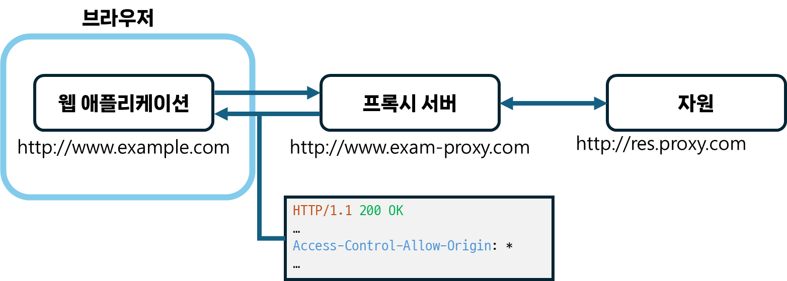
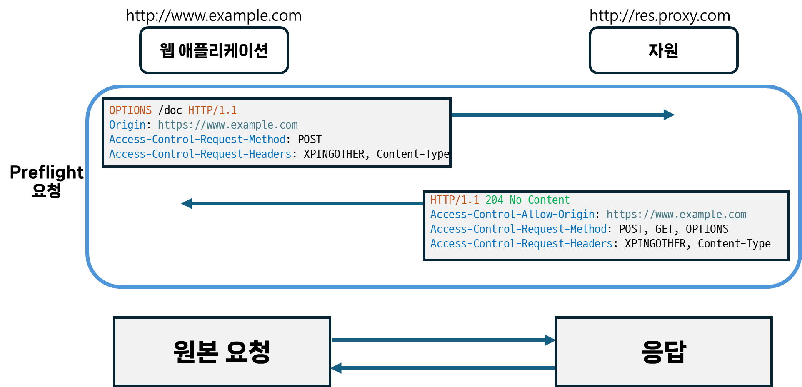

[웹, 네트워크] SOP 알아보기
서론
CS 스터디에서 3월 20일 발표예정인 SOP에 대해 정리한 문서를 블로그에 공유하고자 한다.
SOP 정책이란?.
동일 출처 정책(SOP, Same Origin Policy) 은 한 출처에서 불러온 문서 또는 스크립트가 다른 출처의 자원과 상호 작용하는 방식을 제한하는 보안 메커니즘입니다.
다른 출처의 자원과의 상호 작용을 제한하므로써, 잠재적으로 악의적인 문서들로 부터 격리시켜 가능한 공격 경로를 줄일 수 있습니다. 이러한 격리를 통해 악성 웹사이트가 사용자가 로그인한 타 서비스의 데이터를 읽고 공격자에게 전달하는 것을 막을 수 있습니다.
출처(Origin)?
웹에서 같은 출처인지 판단하는 기준은 URL의 프로토콜, 포트(지정된 경우), 호스트 이름(hostname)이 모두 동일한 지 입니다. 이를 튜플이라고 부르기도 합니다.
호스트 이름(hostname): 네트워크에 연결된 컴퓨터 또는 기타 장치에 할당되는 이름으로,로컬 호스트 이름(local hostname)과도메인 이름(domain name)의 조합으로 구성됩니다.- 예시)
en.wikipedia.orgen(로컬 호스트 이름)과wikipedia.org(도메인 이름)으로 구성되어 있습니다.
- 예시)
예시
http://store.company.com/dir/page.html 라는 URL을 기준으로 예시를 들어보겠습니다.
동일한 출처
아래 링크들은 경로만 다른 케이스 입니다.
http://store.company.com/dir2/other.htmlhttp://store.company.com/dir/inner/another.html
다른 출처
프로토콜이 다른 경우
https://store.company.com/page.html
포트가 다른 경우
http://store.company.com:81/dir/page.html
호스트 이름이 다른 경우
http://news.company.com/dir/page.html
출처 변경 공격
이전에는 DOM 객체인 document의 document.domain을 조작해 도메인을 현재 도메인 또는 상위 도메인으로 변경할 수 있었으나, 보안 문제 때문에document.domain 설정자가 사장되어(deprecated) 해당 방식 공격은 불가능하게 되었습니다.
교차출처 접근의 종류
교차출처 쓰기
링크, 리다이렉션, form 제출 등의 작업으로, 일반적으로 허용되는 작업입니다. 일부 HTTP 요청은 preflight가 필요합니다.
교차출처 임베딩
일반적으로 허용됩니다.
<script>(javascript), <link>(css), <img>, <video>, <audio>, <object>, <embed>, <iframe>, @font-face(일부 브라우저 한정) 등이 있습니다.
교차출처 읽기
일반적으로 허용되지 않으나, 임베딩을 통해 읽기 접근이 유출되는 경우가 있습니다.
- ex) 임베딩된 이미지의 크기, 임베딩된 스크립트의 동작
CORS 정책이란?
교차 출처 리소스 공유(CORS, Cross-Origin Resource Sharing)는 다른 출처의 자원을 접근할 수 있도록 허용하는 정책을 말합니다.
이는 서버에서 웹 브라우저가 해당 자원을 읽을 수 있는 출처를 설명할 수 있는 새로운 HTTP 헤더 (Access-Control-Allow-Origin)를 추가하는 방식으로 동작합니다.
클라이언트에서는 교차출처 자원을 호스팅하는 서버에 ‘서버가 실제 요청을 허용할 것인지‘를 확인하기 위해 브라우저가 preflight 요청을 전송하는 메커니즘을 사용합니다.
CORS를 사용하는 요청
fetch(),XMLHttpRequest호출- 웹 폰트(
@font-face) - WebGL 텍스처
- 이미지/비디오 프레임
<canvas>상에서drawImage()를 이용해 그려진
- 이미지상의 CSS 도형
CORS 관련 헤더
Access-Control-Allow-Origin
응답 헤더 중 하나로, 서버의 자원 소유자가 특정 도메인에서의 요청만 허용해 자원에 대한 접근을 제어하는데 쓸 수 있는 헤더입니다.
// https://foo.example에서의 접근만 허용하는 경우
Access-Control-Allow-Origin: https://foo.example
// 모든 도메인으로부터 접근을 허용하는 경우 (자격증명이 필요 없는 요청인 경우)
Access-Control-Allow-Origin: *
- 자격 증명: 쿠키, TLS 클라이언트 인증서, 인증 헤더와 같은 인증 정보를 담은 것을 말하며,
Access-Control-Allow-Credentials(응답 헤더)가true인 경우 사용자는 교차 출처 요청에 자격 증명을 포함할 수 있습니다.
완화 방법
Access-Control-Allow-Origin 응답 헤더 설정
서버 측에서 요청을 허용할 출처를 명시적으로 설정해줍니다.
만약 자격증명이 필요한 경우, *는 사용할 수 없습니다.
Access-Control-Allow-Origin: <origin> | *
프록시 서버 사용하기

웹 애플리케이션에서 직접 자원에 접근하지 않고, 프록시 서버를 사용해 요청을 전달하는 방식입니다. 이는 SOP 정책이 브라우저-서버 간 통신에서만 구현된다는 점을 이용합니다.
웹 애플리케이션과 프록시 서버간에는 Access-Control-Allow-Origin: * 응답 헤더를 추가해 자유롭게 요청을 주고 받습니다.
그리고 서버-서버 간 통신에서는 SOP 정책을 만족할 필요가 없으므로 프록시 서버에서는 자유롭게 교차출처 자원에 접근할 수 있습니다.
Preflight란?

다른 출처의 자원에 대해 OPTIONS 메서드 요청을 먼저 전송해, 실제 요청을 전송해도 안전한지 확인하는 방식을 말합니다.
브라우저에서는 CORS를 사용하는 요청에 대해 OPTIONS 메서드를 자동으로 보내는데, 이때 원본 요청의 메서드, 헤더와 같은 값을 Access-Control-Request-... 과 같은 헤더에 담아서 해당 메서드, 헤더로 요청을 전송할 수 있는지 확인합니다.
그리고 서버는 이에 대한 응답에 Access-Control-Allow-... 와 같은 헤더를 담아 허용되는 메서드, 헤더 등에 대한 정보를 알려줍니다.
Preflight 관련 헤더
요청 헤더
Origin
요청을 발생시킨 출처(스키마, 호스트 이름, 포트)를 나타냅니다.
user agent가 페이지에 포함되거나, 페이지 내 스크립트가 접근하는 자원에 대해 요청해야 하는 경우 페이지의 출처가 요청에 포함될 수 있습니다.
- 일반적으로
user agent는 모든 교차출처 요청, 또는 동일 출처에 대해GET,HEAD를 제외한 요청에 대해Origin헤더를 추가합니다.
// 특정 케이스의 경우 Origin은 null일 수 있습니다.
Origin: null
// 스키마(사용되는 프로토콜)와 호스트 이름(+ 포트)의 조합으로 Origin이 표시됩니다.
Origin: <scheme>://<hostname>
Origin: <scheme>://<hostname>:<port>
Access-Control-Request-Method
원본 요청의 메서드가 어떤 것인지를 나타냅니다.
// ex) post 요청인 경우
Access-Control-Request-Method: POST
Access-Control-Request-Headers
원본 요청의 헤더로 어떤 것이 있는지를 나타냅니다.
// ex) 헤더에 X-PINGOTHER, Content-Type를 담은 경우
Access-Control-Request-Headers: X-PINGOTHER, Content-Type
응답 헤더
Access-Control-Allow-Origin
Access-Control-Allow-Methods
요청한 자원에 대해 쿼리할 수 있는 유효한 메서드들을 알려줍니다. (쉼표로 구분)
모든 메서드를 허용하기 위해 *(와일드카드)를 쓸 수 있지만, 자격 증명이 없는 요청(HTTP 쿠키 또는 authentication이 없는)에 한해서만 사용할 수 있습니다.
// ex) POST, GET, OPTIONS 메서드만 허용되는 경우
Access-Control-Allow-Methods: POST, GET, OPTIONS
Access-Control-Allow-Headers
원본 요청의 헤더 중 허용되는 헤더를 알려줍니다. (쉼표로 구분)
모든 헤더를 허용하기 위해 *를 쓸 수 있지만, 자격 증명이 없는 요청(HTTP 쿠키 또는 authentication이 없는)에 한해서만 사용할 수 있습니다.
또한, *를 사용해도, Authorization 헤더의 경우 명시적으로 나열해야 합니다.
// ex) X-PINGOTHER, Content-Type 헤더가 허용되는 경우
Access-Control-Allow-Headers: X-PINGOTHER, Content-Type
// ex) 'X-Custom-Header' 라는 사용자 지정 헤더가 허용되는 경우
Access-Control-Allow-Headers: X-Custom-Header
Access-Control-Max-Age
preflight의 결과(즉 Access-Control-Allow-Methods, Access-Control-Allow-Headers에 포함된 정보)가 캐시될 수 있는 기간을 알려줍니다.
결과를 캐시할 수 있는 최대 시간(초)를 나타내며, 브라우저마다 최대치(파이어폭스:24시간, 크로미움(v76이전): 10분, 크로미움(v76이후): 2시간)가 다릅니다.
// ex) preflight의 결과가 캐시로 10분동안 저장됩니다.
Access-Control-Max-Age: 600
참고 문서
- Cross-Origin Resource Sharing (CORS) - HTTP | MDN (mozilla.org)
- Same-origin policy - Security on the web | MDN (mozilla.org)
- hostname(호스트명), domain name(도메인), same origin VS same site (velog.io)
- 3 Ways to Fix the CORS Error — and How the Access-Control-Allow-Origin Header Works | by David Katz | Medium
- CORS(교차 출처 리소스 공유) | 토스페이먼츠 개발자센터 (tosspayments.com)